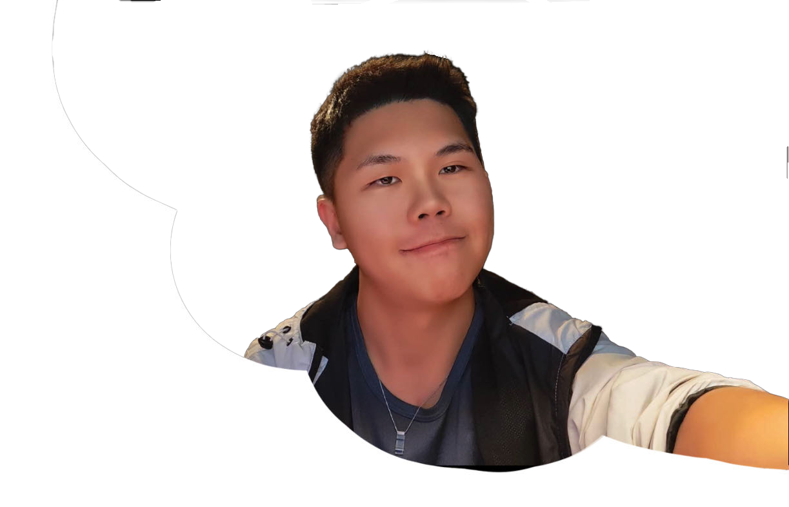

"Hello, my name is Javek Liang. I am studying at the University of Waterloo, majoring in Global Business and Digital Arts. I am passionate about user experience and front-end development and enjoy exploring new technologies. In my spare time, I enjoy reading, painting, outdoor hiking and photography.
